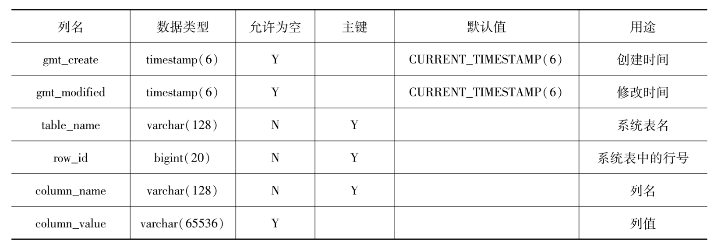

OceanBase-2023 大赛记录
OceanBase 2023
Pre Concepts
What is multi-tenant architecture?
阅读oceanbase的源码过程中第一次碰到租户（tenant）这个概念，而且在题目的相关代码中频繁出现。Multi-tenant设计允许多个用户组（也就是租户）访问一个软件实例所管理的系统或资源。就像是有一个单元楼，里面有很多个房间，每个房间可以看做一个租户，他们共同驻扎在这个单元楼上。每个租户之间会保证安全性和隔离性，也就是一个租户不允许访问其他租户的资源。由于租户之间的隔离，那么不同的租户可以在自己的领域实现定制化，而不会影响到其他租户，就好像你租了一间房子，按照你的个人需求和意愿对房子进行装修，不可能装修到别人家里一样。有了多租户的概念，自然而然会想，这个和单租户有什么区别呢？优势在哪里？我们为什么要这样设计？下面的表格说明了主要区别：
| Aspect | Single-tenant Architecture | Multi-tenant Architecture |
|---|---|---|
| Tenant Instances | Each tenant has a dedicated instance of the application and its resources | Multiple tenants share a single instance of the application and its resources |
| Scaling | Scaling requires provisioning and managing individual instances for each tenant | Easier scalability as multiple tenants can be accommodated within a single instance |
| Security | More secure due to isolated environments | Security measures involve ensuring data isolation and preventing unauthorized access |
| Cost Efficiency | Less cost-efficient: hardware and software for each user is paid separately | More cost-efficient thanks to shared infrastructure and platform |
| Maintenance and Upgrades | Independent maintenance and upgrades for each tenant's instance | Centralized maintenance, updates, and upgrades that apply to all tenants |
| Deployment | Slower deployment: each tenant requires individual setup and configuration | Faster deployment: new tenants can be added within the existing setup |
Final
OceanBase部署流程
OceanBase的部署流程摸索了差不多一下午一晚上的时间，在群里各种bug提问，最后还是严格采取官方文档中的步骤来的最稳。连接好官方发的服务器之后。打开终端，默认进入root界面。这个界面下有source文件夹，里面包含了oceanbase的源代码。接下来需要按照如下流程，来确保每次部署和运行TPC-C、TPC-H等测试顺利执行。
终端输入
ps -aux | grep observer确保当前无任何observer的进程运行，若有，直接
kill -9 xxxxx，其中xxxxx是observer的pid号。终端输入obd命令
obd cluster list //如果里面存在任何集群，调用obd cluster stop xxx 以及obd cluster destroy xxx（xxx为对应集群的名字），确保摧毁集群 cd /root/.obd/cluster/ //如果cluster里存在任何文件夹，删除掉去data文件夹下面，清空obcluster的内容，同时把最新编译好的release模式的二进制文件，复制到该文件夹的bin目录下
cd /data rm -rf obcluster mkdir obcluster cd obcluster mkdir bin cd bin cp /root/source/oceanbase/build_release/src/observer/observer ./observer```shell cd /root/source/oceanbase/ python3 deploy.py --cluster-home-path /data/obcluster
- `deploy.py`文件会进行oceanbase的boostrap过程，等待其运行完毕后，运行如下终端命令 ```shell cd /root/.obd/cluster/ mkdir obcluster cd obcluster分别创建三个文件，
config.yaml、.data以及inner_config.yaml。并分别填入下面的内容：config.yaml 文件内容
oceanbase-ce: servers: - 127.0.0.1 global: home_path: /data/obcluster # 注意 这里是你部署的obcluster集群根目录，需要按照实际情况调整 cluster_id: 1 enable_syslog_recycle: true enable_syslog_wf: false max_syslog_file_count: 4 devname: lo memory_limit: 10G production_mode: false __min_full_resource_pool_memory: 1073741824 system_memory: 1G cpu_count: 24 datafile_size: 60G datafile_maxsize: 100G datafile_next: 20G log_disk_size: 40G.data 文件内容
name: obcluster components: oceanbase-ce: hash: ee47f7d89ad323bd634a5976f6e89f04911f81a4 version: 4.2.1.1 status: STATUS_STOPPED config_status: UNCHNAGEinner_config.yaml 文件内容
name: obcluster components: oceanbase-ce: hash: ee47f7d89ad323bd634a5976f6e89f04911f81a4 version: 4.2.1.1 status: STATUS_RUNNING config_status: UNCHNAGE设置好TPC-H测试所需要的参数
mysql -S /data/obcluster/run/sql.sock -uroot@test -e "SET GLOBAL secure_file_priv = '/'" mysql -S /data/obcluster/run/sql.sock -uroot@test -e "SET GLOBAL ob_query_timeout = 60000000"执行测试命令
# sysbench 测试 obd test sysbench obcluster --time=14 --threads=5 --tables=4 --table-size=10863 --database=test --tenant=test --script-name=oltp_point_select # TPC-C测试 obd test tpcc obcluster --tenant=test --database=test --terminals=10 --run-mins=1 --warehouses=1 --optimization=0 # TPC-H测试 obd test tpch obcluster --tenant=test --database=test --remote-tbl-dir=/data/obcluster/tbl --scale-factor=1 --optimization=0
以上就是全部的流程，下次编写好代码继续执行时，还需要从头开始继续做一遍，才可以确保oceanbase正确部署。
优化点-One：锁等待
优化点-Two：选举静默
Source Code Reading Note
Server Init
init_network()
init_network对OB的网络子系统进行初始化操作，OBServer的网络处理由ObSrvNetworkFrame抽象，并且提供了初始化init方法。首先会根据global
context的一些信息初始化一个ObNetOptions的
ObInnerTableSchema
ObInnerTableSchema提供的是一系列创建table的schema的接口，以ObTableSchema作为输出参数，在此基础上调用宏定义好的函数，对ObTableSchema的属性进行设置。比如对于一号表（THE
ONE）——
all_core_table，会调用all_core_table_schema函数，内部会根据下图的模式来设置每一列的相关信息，以及一号表的属性（包括用什么类型的索引、存储格式等）。

其余的所有表的模式创建同理。
ObBootstrap:: batch_create_schema
在系统自举的过程中，最消耗时间的部分就是batch_create_schema。输入参数是一个包含128个table的ObIArray数组，在batch内部会遍历每一个table进行创建。
目前消耗时间最多的是创建all_core_table这一个batch批次的下一个批次。在我的一次测试中，create_all_schema的时间总共消耗9.3s，而第二个批次所花费的时间足足有5.6s左右，达到所有时间的60%。而后面的每一个batch所消耗的时间大约在400ms-500ms之间，总共14个batch。每一个batch，ob把它看做一次transaction，在完成正确性检查之后，开始任务前会调用transaction start，结束创建后会调用end，完成提交。
进一步观察第二次batch的日志可以发现，耗时的关键在于log operation，有几个table的log operation操作占用了90%的创建时间。但后面的batch的log operation基本cost在微秒级别，而第二次的batch的前几个table的log operation达到了秒级（0.3-0.5s）。但为什么前几个table的log operation的时间这么多呢？
想要优化它，目前最容易想到的思路就是并发创建schema，但需要确认的是batch与batch之间的table元信息是否存在依赖关系，另一个就是以什么样的方式实现并发创建，将时间藏起来。
Election 日志
init_and_start
is_inited:true, is_running:true
proposer:{ls_id:{id:1}, addr:"127.0.0.1:2882", role:Follower, ballot_number:-1, lease_interval:-0.00s, memberlist_with_states:{member_list:{addr_list:[], membership_version:{proposal_id:9223372036854775807, config_seq:-1}, replica_num:0}, prepare_ok:[], accept_ok_promised_ts:[follower_promise_membership_version:[]}, priority_seed:0x1000, restart_counter:1, last_do_prepare_ts:1970-01-01 08:00:00.-1, self_priority:NULL, p_election:0x7fbc6db73030}
acceptor:{ls_id:{id:1}, addr:"127.0.0.1:2882", ballot_number:-1, ballot_of_time_window:-1, lease:{owner:"0.0.0.0:0", lease_end_ts:invalid, ballot_number:-1}, is_time_window_opened:False, vote_reason:, last_time_window_open_ts:1970-01-01 08:00:00.-1, p_election:0x7fbc6db73030}, ls_biggest_min_cluster_version_ever_seen:0.0.0.0, priority:NULL}, msg_handler=0x7fbc6db72ff0)